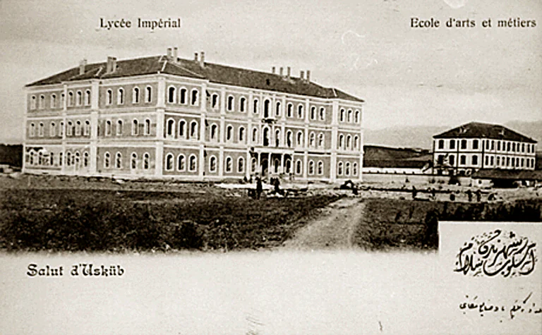
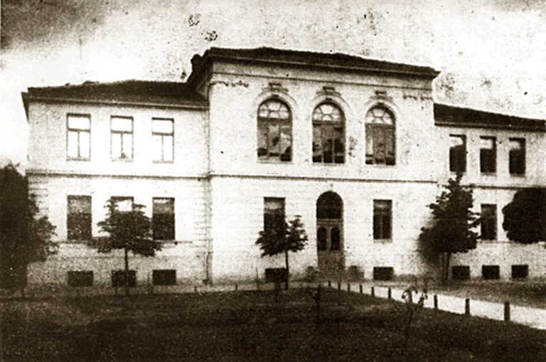

Felsefe Fakültesi
- Gerçekleştiren
- Kole Čašule, Blagoja Drnkov
- Yıl
- 1947
- Süre
- 00:04

19. yüzyılın sonlarına doğru yapılan İdadiye ortaokulu. Eğitimi sekiz yıl sürerdi ve her inançtan öğrenciye açıktı. Bina sonradan, 1963 depremi ağır hasar verene kadar Öğretmen Okulu oldu. Bu yüzden 1965'te yıkıldı; dört sütunlu girişi anıt olarak bırakıldı. Üsküplüler bu bölgeye hâlâ İdadiye der. Arka planda Sanat ve Zanaat Okulu.

Öğretmen Okulu (1920'ler)

Zanaat okulu binasıyla şehir parkının bir bölümü. (1920'ler)

İdadiye ortaokulunun, İkinci Dünya Savaşı'ndan sonra "Öğretmen Okulu"nun binası; 26 Temmuz 1963'teki yıkıcı depremde yıkıldı.

19. yüzyılın sonlarına doğru öğretmen okulunun hemen yanında yapılan Sanat ve Zanaat Okulu. 1963 depreminde ağır hasar gördü ve bu yüzden yıkıldı.

1920'de Vardar rıhtımında Üsküp Üniversitesi. Belgrad Üniversitesi'nin bir parçası olarak Felsefe Fakültesi burada bulunuyordu.

1920'de Vardar rıhtımında Üsküp Üniversitesi. Belgrad Üniversitesi'nin bir parçası olarak Felsefe Fakültesi burada bulunuyordu.

Erkek lisesinin avlu binası. (1912)

1902-04'te yapılan, neoklasik öğeleriyle Üsküp erkek lisesi. Ön planda "Poincaré", sonradan "Leningradska" sokağı.

1902'de inşa edilen erkek lisesi.

İlindenska sokağındaki büyük medrese (1920'ler)

"Meryem Ana" ilkokulu - 1920'ler.

"Jovan Skerlić" ilkokulu - 1920'ler.

Üçüncü halk ilkokulu (1920'ler)

Yahudi mahallesindeki Sırp-Yahudi ilkokulu.
(19. yüzyılın sonu)

"Đura Jakšić" ilkokulu (1920'ler)

"Kraliçe Maria" halk ilkokulu - 1920'ler.

Şehir meydanında Macura binasının yanındaki "Çar Dušan" ilkokulu - 1920'ler.
Şehir meydanında Macura binasının yanındaki "Çar Dušan" ilkokulu - 1920'ler.

"Branko Radičević" ilkokulu - 1920'ler.

"Ljuba Kovačević" halk okulu - 1920'ler.

"Vladimir Karić" halk okulu - 1920'ler.

Sauk Çeşme mahallesinde "Dositej Obradović" halk okulu - Çair - 1920'ler.

"Vuk Stefan Karadžić" ilkokulu - 1920'ler.

"Mehmed Sokolović" halk okulu - 1920'ler.

"Osman Džikić" halk okulu - 1920'ler.

Ticaret Akademisi - 1920'ler.

Ticaret Akademisi - 1920'ler.

Erkek lisesinin avlusu - 1920'ler.

1930'larda inşa edilen "Dositej Obradović" ilkokulunun yeni binası.

"Goce Delčev" ilkokulu. (1934'te fotoğraflandı)

"Goce Delčev" ilkokulu. (1950 civarında fotoğraflandı)

Kız lisesi - gece. Ön planda Üsküp'ün kurtarıcılarının anıtı. (1950'ler civarı)

1930'larda yapılan kız lisesi; fotoğraf 1950'lerden. Binanın önünde "Üsküp'ün Kurtarıcıları" anıtı var

Fen Fakültesi - 1950'ler

"11 Ekim" ilkokulu - 1960'lar

Teknik Fakülte - 1960'lar

Film Haberleri no. 10
 Su kemeri4 kartpostal
Su kemeri4 kartpostal Kale30 kartpostal
Kale30 kartpostal Köprüler60 kartpostal
Köprüler60 kartpostal Rıhtım58 kartpostal
Rıhtım58 kartpostal Meydan46 kartpostal
Meydan46 kartpostal Binalar66 kartpostal
Binalar66 kartpostal Hristiyan kiliseleri19 kartpostal
Hristiyan kiliseleri19 kartpostal İslami yapılar33 kartpostal
İslami yapılar33 kartpostal Subaylar Evi29 kartpostal
Subaylar Evi29 kartpostal Tiyatro28 kartpostal
Tiyatro28 kartpostal Tren garı13 kartpostal
Tren garı13 kartpostal Okullar36 kartpostal
Okullar36 kartpostal Parklar12 kartpostal
Parklar12 kartpostal Pazarlar18 kartpostal
Pazarlar18 kartpostal Sokaklar38 kartpostal
Sokaklar38 kartpostal Panorama I60 kartpostal
Panorama I60 kartpostal Panorama II30 kartpostal
Panorama II30 kartpostal Kolajlar55 kartpostal
Kolajlar55 kartpostal Seller9 kartpostal
Seller9 kartpostal Deprem27 kartpostal
Deprem27 kartpostal Üsküp 200026 kartpostal
Üsküp 200026 kartpostal